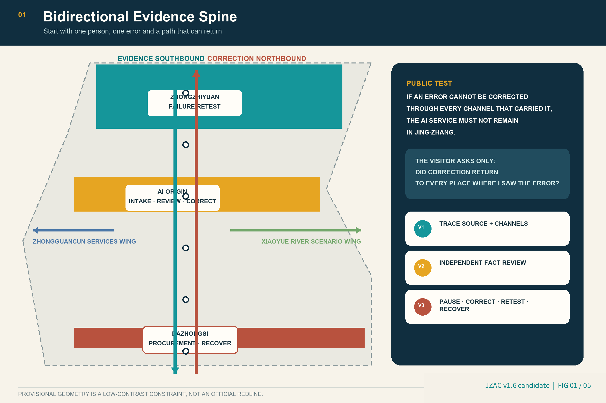
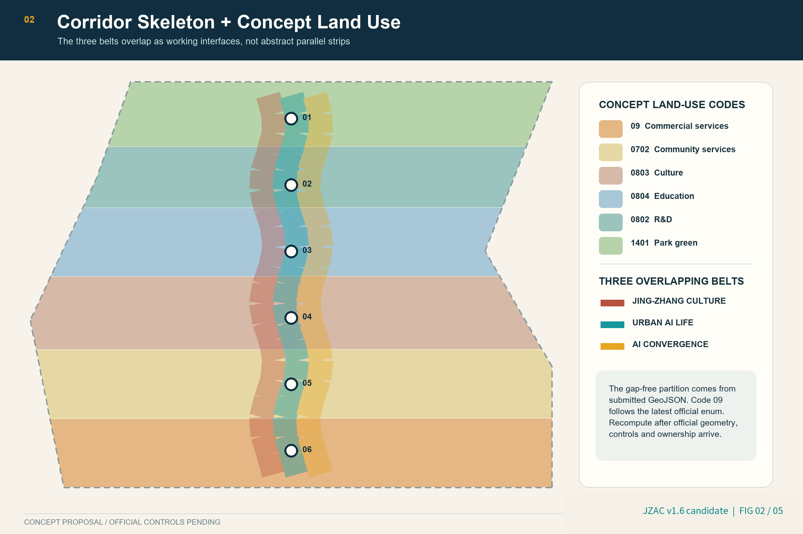
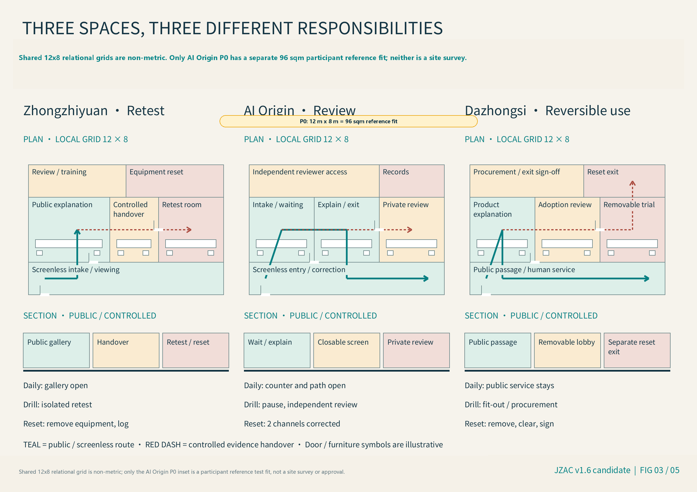
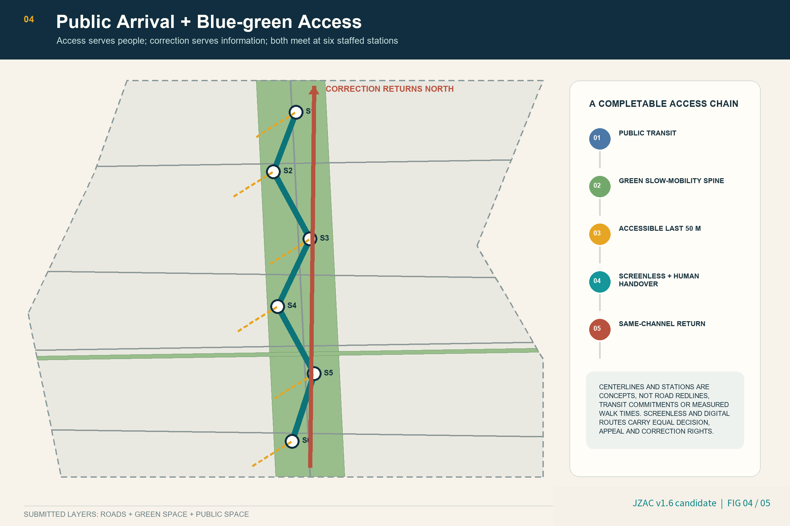
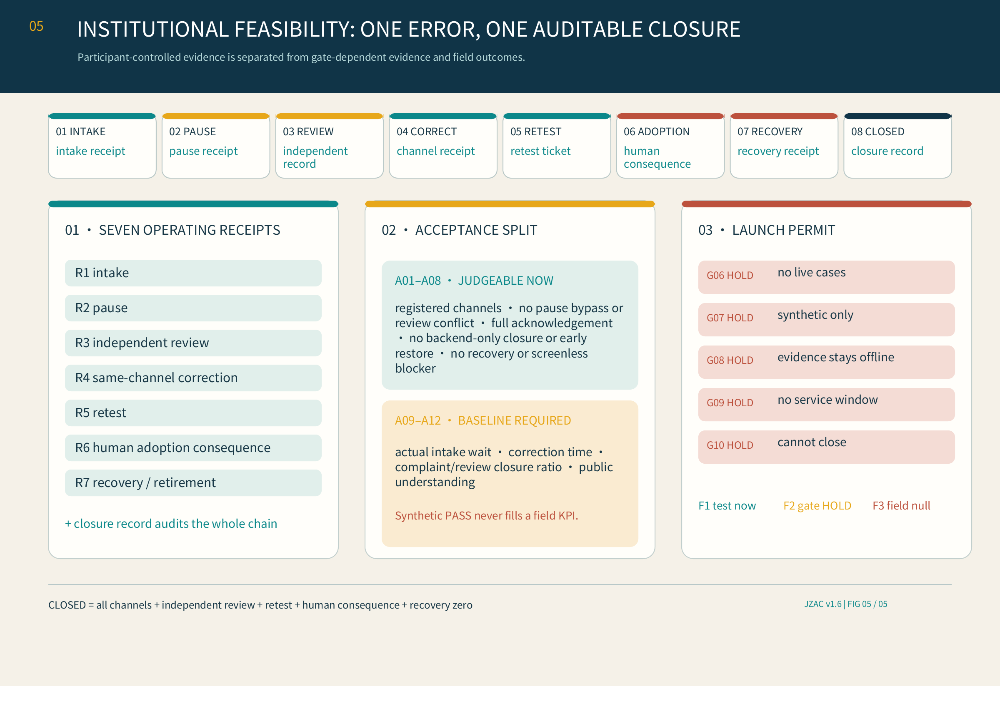

EIGHT STATES, SEVEN RECEIPTS, ONE UNSKIPPABLE CLOSURE CONDITION
Version 1.6 adds no new concept. It converts the existing three-area relay into an auditable chain of duties. Every state binds an accountable role, receipt, space, external gate, entry condition and exit condition.
01 INTAKEintake receipt Origin counter02 PAUSEpause receipt all channels03 REVIEWindependent record private room04 CORRECTsame-channel receipt front end 2/205 RETESTretest ticket Zhongzhiyuan06 ADOPTIONhuman consequence Dazhongsi07 RECOVERYrecovery/retire receipt zero open item08 CLOSEDclosure record synthetic only
Forbidden: bypassing PAUSE, backend-only edits, conflicted review, restoration before retest, model-made adoption, or closure with an open recovery item.
G06 channelsNo agreement: no live casesG07 reviewerNo appointment: synthetic onlyG08 cyber/rollbackNo release: evidence stays offlineG09 staff/fundsNot secured: no service windowG10 recoveryNot accepted: cannot close
P0 · PRE-IMPLEMENTATION
CIVIC REVIEW AND CORRECTION RELAY CELL
The 96 sqm fit is the institution's minimum physical carrier, not the proposal itself. The primary scheme remains intact; a failed gate reduces operating intensity, never public correction rights.
30 secondsPublic test, bidirectional spine and three verification layers3 minutesEight-state closure, seven receipts and P0 space15 minutesDuty separation, A01–A12, ten gates and safe states
12 m × 8 m · 96 m² participant reference test fit
Not a measured room, site placement or compliance conclusion; the source 12 by 8 adjacency diagram remains non-metric.
24 m² screenless entry / same-channel correction
16 m² intake / waiting
16 m² explanation / exit
16 m² private review
16 m² independent access / civic translation
8 m² controlled records / recovery
2 cases/hourDuty-separation bottleneck screen, not a field SLA5 seats · 780 hoursNinety-day reference; annual FTE is null6 packages · no amount100% scope shares; no quote or funding
FOUR CONDITIONAL SAFE STATES
Primary
Restricted state
Preserve / prohibit
Fixed civic-review cell
Mobile counter + booked private room
Keep screenless review and receipt; no permanent-build claim
Three-area field relay
Single-site offline tabletop relay
Keep eight states and recovery; no field-performance claim
Machine channel link
Human-signed channel ledger
Keep owner and versions; no instant-automation claim
Bounded connected service
Offline synthetic evidence kit
Keep public explanation and fail-close; no personal material
EXECUTION + COLLABORATION
Unsigned annex: eight-state responsibility chain, seven receipts, P0 physical carrier, regional handovers, channel receipts, data rules, ten external gates and field conditions. Concept proposal; provisional boundary; site conditions and KPIs await authorized measurement.
SPATIAL EVIDENCE
FIVE SOURCE-LINKED CORE FIGURES
Spatial structure returns to the foreground: submitted geometry is a low-contrast base; conceptual moves are high-contrast overlays.

01双向证据脊 / Bidirectional spine

02概念用地与三带 / Land use + belts

03三区平面剖面 / Three-area plans + sections

04公共到达与蓝绿 / Public access + blue-green

05指标、广度与验收 / Metrics + delivery
SYNTHETIC DRILL · NOT FIELD PERFORMANCE
PILOT-A · THREE-AREA CORRECTION RELAY
Clearly marked synthetic test material, not a real incident or field-performance claim. Inject any missing receipt: the system must pause or retire.
This is an unsigned protocol draft. Roles are unappointed and signatures are empty; the synthetic drill can run offline, but field service is not authorized.
01 Regional interface contracts
REG-01 · Beiwei Community
Pending appointment / unsigned
Sending role
community liaison
Receiving role
Origin intake steward
Input
consented, de-identified questions and screenless tasks
Output
task card, communication barriers and same-channel reply
Authorization
participation and purpose permission
Retest trigger
communication method or task version changes
Exit
withdraw question material, notify intake, retain non-personal status
REG-02 · Future Science City
Pending appointment / unsigned
Sending role
candidate research team
Receiving role
Zhongzhiyuan evaluation lead
Input
model version, licensed samples and limitations
Output
failure dossier and reproducible retest task
Authorization
model, sample and disclosure permission
Retest trigger
model, sample or intended purpose changes
Exit
revoke test permission, expire receipts, notify adopters
REG-03 · Huairou Science City
Pending appointment / unsigned
Sending role
candidate research-material custodian
Receiving role
Zhongzhiyuan and Origin reviewers
Input
licensed instrument notes, provenance and interpretation questions
Output
evidence limitations and revised public explanation
Authorization
material-use and public-explanation permission
Retest trigger
instrument version, material or claim changes
Exit
stop display, withdraw copies and return revision notice
REG-04 · Beijing E-Town
Pending appointment / unsigned
Sending role
candidate industrial scenario owner
Receiving role
Dazhongsi procurement and Zhongzhiyuan retest roles
Input
redacted tasks, supplier claims and exit requirements
Output
stress-test dossier, procurement revision advice and migration checklist
Authorization
enterprise material, test-environment and procurement-use permission
Retest trigger
supplier, process or exit capability changes
Exit
stop adoption, isolate samples, revoke interface and verify export
REG-05 · Jing-Jin-Ji nodes
Pending appointment / unsigned
Sending role
candidate receiving-site service owner
Receiving role
Origin handover and receiving-site reviewers
Input
minimal protocol, scope limitations and failure examples
Output
transfer-difference table, local review result and exit record
Authorization
purpose-specific permission and local responsibility confirmation
Retest trigger
receiving site, population or channel changes
Exit
withdraw interface, notify each recipient; no transfer of personal case files
02 Full-stack handovers
Element
Handover
Deliverable
Data
Material custodian → Zhongzhiyuan
Permission, sample version, purpose → minimal test bundle; withdrawal stops sample use
Basis, dissent, conflict, finding/uncertainty and expiry
Publisher, supplier, author or channel owner cannot self-review
CORRECT
Original-channel owner / Case steward
Before/after versions, front-end correction and per-channel acknowledgement
Backend-only edit or missed channel blocks RETEST
RETEST
Retest lead / Retest lead
Reproducible failure, retest result and restoration advice
Retest lead cannot self-authorize restoration
ADOPTION
Adoption/retirement owner / Pilot steward
Human adopt/modify/retire decision and affected procurement item
Model output cannot substitute for a human decision
RECOVERY
Adoption/retirement owner / Data custodian
Itemized assets, materials, cache, backup, equipment and space
Any open item blocks CLOSED
CLOSED
Pilot steward / Case steward
Closure record linking all seven operating receipts
Only CLOSED_SYNTHETIC_ONLY; no live-service authorization
Duty separation is a capacity constraint: channel ownership, independent review, retesting and the adoption consequence cannot be collapsed into one person under queue pressure. Unavailable review or unresolved facts keep the case paused with human explanation, not an automatic adverse finding.
04 Original-channel receipts
Completion requires correction and acknowledgement on every registered original channel. Backend-only changes, omissions or missing receipts keep service paused. Inventory and acknowledgement counts are not interchangeable.
CHANNEL-SIGN-01 · drill physical exhibit label
Original-channel owner
Field
Value
version_before
Blank — complete only during authorized field work
version_after
Blank — complete only during authorized field work
paused_at
Blank — complete only during authorized field work
corrected_at
Blank — complete only during authorized field work
acknowledged_by
Blank — complete only during authorized field work
evidence_ref
Blank — complete only during authorized field work
CHANNEL-WEB-01 · drill offline webpage
Original-channel owner
Field
Value
version_before
Blank — complete only during authorized field work
version_after
Blank — complete only during authorized field work
paused_at
Blank — complete only during authorized field work
corrected_at
Blank — complete only during authorized field work
acknowledged_by
Blank — complete only during authorized field work
evidence_ref
Blank — complete only during authorized field work
05 Data impact and retention draft
Only intake, review, correction and recovery of mislabeled heritage content; current material is synthetic only.
No faces, ID numbers, health records or cross-scenario profiles. Any field contact detail needs separate permission and isolation, with a no-contact-detail service route.
Assess reputational harm, over-disclosure, secondary propagation, reviewer conflicts, service denial and screenless exclusion. Record controls, residual risk, owner and acceptability for each; no live channels before acceptance.
No-account/no-phone intake, paper receipts and assisted-communication co-tests
Site and actual-user testing remain pending / Accessibility co-test lead
Incorrect deletion or excessive retention
Classified retention, restricted preservation exceptions, backup ledger and review dates
No complete-deletion claim while backup actions remain open / Data custodian
Track originals, derivatives, caches, exports and backups separately. Pending backup removal cannot be called complete deletion; record expiry and re-delete-on-restore controls. Any preservation exception requires basis, approver, review date and restricted access.
Pending appointment / unsigned
06 Accessibility co-test plan
Voluntary informed participation, stoppable at any time; no diagnosis disclosure or default recording; withdrawal does not affect service.
Complete intake and paper receipt without a phone; read status and limits with low vision; follow wheelchair route from entrance through private review to exit; explain provenance versus truth using easy-read or assisted communication.
Equivalent decision, appeal and correction rights; blocked core tasks require revision and retesting. This is a co-test plan, not built-environment accessibility certification.
Record field
Value
task_id
Blank — complete only during authorized field work
communication_mode
Blank — complete only during authorized field work
consent_record
Blank — complete only during authorized field work
completed_without_phone
Blank — complete only during authorized field work
assistance_requested
Blank — complete only during authorized field work
barrier
Blank — complete only during authorized field work
revision
Blank — complete only during authorized field work
retest_result
Blank — complete only during authorized field work
07 Measurement definitions
Baseline, field target and observation are all pending; failures and unresolved cases must be reported.
Metric
Method
Collector
Human handover
request_at → human_accept_at; failures and unaccepted cases reported separately
Case steward
Same-channel correction
correction decision → last original-channel acknowledgement; denominator is all inventoried original channels
Original-channel owner
Screenless parity
report completed/attempted tasks, withdrawals and assistance by communication mode; retain failures
correct explanations of provenance vs truth/consenting respondents; show nonresponses
Accessibility co-test lead
Recovery completion
evidence-closed recovery items/all required items; separate backups and site
Data custodian
08 Disposition and signatures
Adoption requires authorization, review, all-channel correction, retest, recovery and signatures. Repairable issues mean modify while paused; irrecoverable issues or withdrawn permission mean retire. Empty draft signatures do not block proposal discussion but prohibit field adoption.
Role
Signatory / date / evidence
Host operator
Blank — complete only during authorized field work
Adoption/retirement owner
Blank — complete only during authorized field work
Independent domain reviewer
Blank — complete only during authorized field work
Co-test tasks and records designed; no field testing / Host operator
Authorization and adoption
execution-contract.json#disposition
Signatures empty: no field adoption; proposal discussion remains possible / Adoption/retirement owner
EVIDENCE + COMPLIANCE BOUNDARY
NO UNIVERSAL TRUTH SCORE, AUTOMATED BLACKLIST, GOVERNMENT-CERTIFICATION CLAIM OR REMOVAL AUTHORITY. PROVISIONAL GEOMETRY IS NOT AN OFFICIAL REDLINE. FAR, HEIGHT, DENSITY, STATUTORY GREEN RATIO AND FIELD KPIs AWAIT OFFICIAL DATA OR AN AUTHORIZED PILOT. OFFLINE ONLY: NO CDN, REMOTE MAP, FORM, TRACKER OR NETWORK REQUEST.